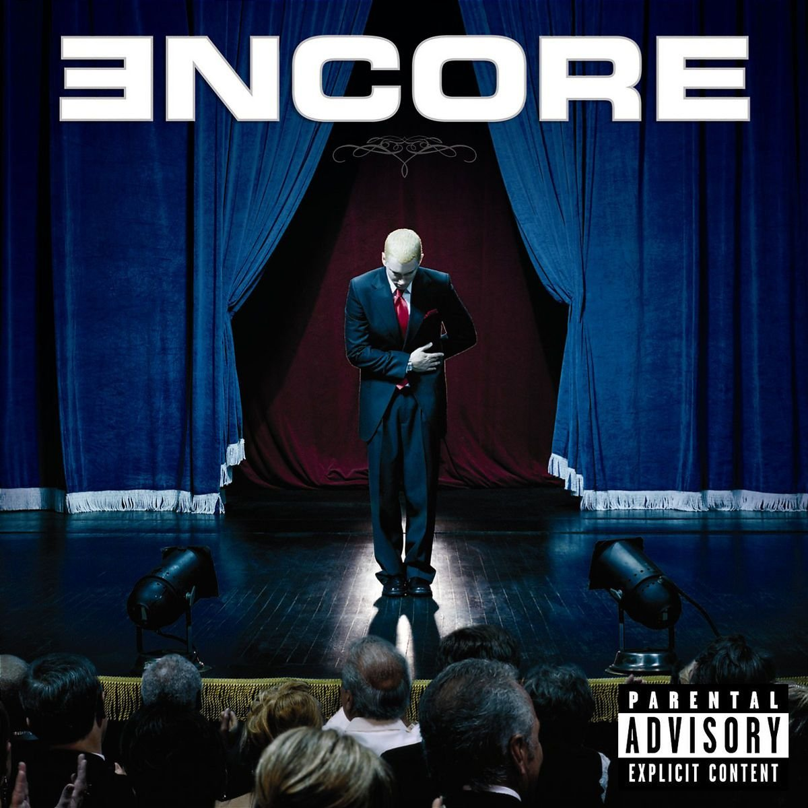
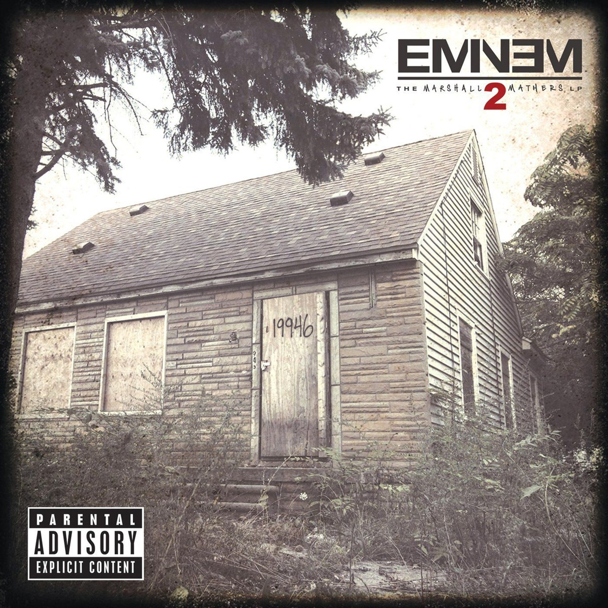

All the albums from Eminem
Eminem is an american rapper born in the city of detroit in 1973. he's known mainly for Lose Yourself and other songs such as Without Me, The Real Slim Shady and the unforgettable, Rap God and The Monster.
INFINITE - 1996

Infinite is the debut studio album by American rapper Eminem. It was released on November 12, 1996, through Web Entertainment. Recording sessions took place at the Bass Brothers' studio, with production handled by Mr. Porter and Eminem himself. The album features guest vocals from fellow rappers Proof, Mr. Porter, Eye-Kyu, Three, and Thyme, as well as singer Angela Workman.
Physical copies of Infinite were released on cassette and vinyl, and Eminem sold the copies from the trunk of his car in Detroit. It is not officially available on any online music stores and only the title track "Infinite" has been made available on Spotify. On November 17, 2016, five days after the 20th anniversary of the album, Eminem posted a remix of the title track that was remastered, made by the Bass Brothers, to his Vevo channel, releasing it digitally for the first time. Retrospectively, the album received mixed reviews from music critics, it was a commercial failure, selling around 70 copies. They are highly valued since the album was made before Eminem was signed to Interscope and Aftermath.
The tracklist is as follows

- Infinite
- W.E.G.O (Interlude)
- It's Ok
- Tonite
- 313 (Ft. Eye-Kyu)
- Maxine
- Open Mic
- Never 2 Far
- Searchin'
- Backstabber
- Jealousy Woes II
- Biterphobia by Soul Intent
- Infinite (credits)
THE SLIM SHADY LP (SSLP) - 1999
The Slim Shady LP is the second studio album by American rapper Eminem. It was released on February 23, 1999, by Aftermath Entertainment and Interscope Records. Recorded in Ferndale, Michigan following Eminem's recruitment by Dr. Dre and Jimmy Iovine, the album features production from Dr. Dre, Bass Brothers, and Eminem himself.
Featuring West Coast hip hop, G-funk and horrorcore musical styles, the majority of The Slim Shady LP's lyrical content is written from the perspective of Eminem's alter ego, named Slim Shady, whom he created on the Slim Shady EP (1997). The Slim Shady LP contains cartoonish depictions of violence and heavy use of profanity, which Eminem described as horror film-esque, in that it is solely for entertainment value. Although many of the lyrics on the album are considered to be satirical, Eminem also depicts his frustrations of living in poverty.
The Slim Shady LP debuted at number two on the Billboard 200, just below TLC's FanMail, and number one on the Top R&B/Hip-Hop Albums chart. It received commercial and critical success, with critics praising Eminem for his unique lyrical style, dark humor lyrics, and eccentric personality. The first single, "My Name Is", became Eminem's first entry on the Billboard Hot 100. The album won Best Rap Album at the 2000 Grammy Awards, while "My Name Is" won Best Rap Solo Performance. In 2000, The Slim Shady LP was certified quadruple platinum by the Recording Industry Association of America (RIAA).
While The Slim Shady LP's success turned Eminem from an underground rapper into a high-profile celebrity, he became a highly controversial figure due to his lyrical content, which some perceived to be misogynistic and a negative influence on U.S. youth. Despite this, the album has since been included in several publications' lists of the greatest albums of all time.
The tracklist is as follows:

- Public Service Announcement
- My Name Is
- Guilty Conscience
- Brain Damage
- Paul (Skit)
- If I Had
- '97 Bonnie & Clyde
- Bitch
- Role Model
- Lounge (Skit)
- My Fault
- Ken Kaniff - Skit
- Cum On Everybody
- Rock Bottom
- Just Don't Give A Fuck
- Soap (Skit)
- As The World Turns
- I'm Shady
- Bad Meets Evil
- Still Don't Give A Fuck
THE MARSHALL MATHERS LP (MMLP) - 2000
The Marshall Mathers LP is the third studio album by American rapper Eminem, released on May 23, 2000, by Aftermath Entertainment and Interscope Records. The album was produced mostly by Dr. Dre and Eminem, along with The 45 King, the Bass Brothers, and Mel-Man. Recorded over a two-month period in several studios around Detroit, the album features more introspective lyricism, including Eminem's thoughts on his rise from rags to riches, the criticism of his music, and his estrangement from his family and wife. A transgressive work, it incorporates horrorcore and hardcore hip hop, while also featuring satirical songs. Featured appearances include Dido, RBX, Sticky Fingaz, Bizarre, Snoop Dogg, Xzibit, Nate Dogg, and D12.
Like its predecessor, The Marshall Mathers LP was surrounded by significant controversy upon its release, while also propelling Eminem to the forefront of American pop culture. Criticism centered on lyrics that were considered violent, homophobic, misogynistic, as well as the reference to the Columbine High School massacre. Lynne Cheney criticized the lyrics at a United States Senate hearing, while the Canadian government considered refusing Eminem's entry into the country. Despite the controversy of the album, it received acclaim from critics, who praised Eminem's lyrical ability and considered the album to have emotional depth.
The album debuted at number one on the Billboard 200, staying atop for eight consecutive weeks. A significant commercial success compared to the release of The Slim Shady LP just the previous year, the album sold 1.78 million copies in its first week, which made it among the fastest-selling studio albums in the United States. The album produced the singles "The Real Slim Shady", "The Way I Am", "Stan", "I'm Back" and "Bitch Please II". Among other publications, Rolling Stone named it the best album of 2000.
The Marshall Mathers LP has been included in several lists of the greatest albums of all time and is widely regarded as Eminem's best album. It has sold 21 million copies worldwide, making it one of the best-selling albums of all time, and is certified 11× platinum by the Recording Industry Association of America (RIAA). It was nominated for Album of the Year and won Best Rap Album at the 2001 Grammy Awards, while "The Real Slim Shady" won Best Rap Solo Performance.
The tracklist is as follows

- Public Service Announcement 2000
- Kill You
- Stan
- Paul (Skit)
- Who Knew
- Steve Berman (Skit)
- The Way i Am
- The Real Slim Shady
- Remember Me
- I'm Back
- Marshall Mathers
- Ken Kaniff (Skit)
- Drug Ballad
- Amitvylle
- Bitch Please II
- Kim
- Under the Influence
- Criminal
8 MILE (Original Soundtrack) - 2001
although not an Eminem album, it does still feature songs like 8 Mile and Lose Yourself

8 Mile: Music from and Inspired by the Motion Picture is the official soundtrack to the 2002 film of the same name. The album, performed by various artists, was released on Shady Records. It spawned the hit single "Lose Yourself" by Eminem, who also stars in the semi-autobiographical movie. The album also spawned a follow-up soundtrack, More Music from 8 Mile, consisting of songs that appear in the film and were released as singles during the film's time setting of 1995. One of the songs was performed by 2Pac, who would be the subject of a documentary with a soundtrack produced by Eminem, who also produced a posthumous album by 2Pac.
The album also features four songs by Wu-Tang Clan and its members, and two songs by Mobb Deep, who eventually signed to G-Unit Records. Both albums were also made available in censored versions, removing most of the strong language and sexual and violent content.
8 Mile: Music from and Inspired by the Motion Picture debuted at number one on the Billboard 200, selling over 700,000 copies in its first week. It sold 510,000 copies in its second week and eventually became the fifth best-selling album in the US of 2002, with sales of 3.4 million copies. It is certified quadruple platinum by the Recording Industry Association of America (RIAA). The album featured the universal number-one hit "Lose Yourself", which won the Oscar for Best Original Song.
The tracklist is as follows

- Lose Yourself
- Love Me
- 8 Mile
- Adrenaline Rush
- Places to Go
- Rap Game
- 8 Miles and Running
- Spit Shine
- Time of My Life
- U Wanna Be Me
- Wanksta
- Wasting My Time
- R.A.K.I.M
- That's My Nigga fo' Real
- Battle
Devil's Night - 2001 (D12)

Devil's Night is the debut studio album by Detroit hip hop group D12. It was released on June 19, 2001, by Shady Records and Interscope Records. It was also the first album to be released on Shady Records, although the label had been active since 1999. Production was primarily handled by Eminem and Dr. Dre, with contributions by Mr. Porter, DJ Head, and Jeff Bass. The album features guest appearances by Obie Trice, Truth Hurts, and Dina Rae.
Devil's Night received mixed reviews from critics but was a commercial success, debuting at number one on the US Billboard 200 with 372,000 album sales in its first week. The album was supported by three singles: "Purple Pills", "Ain't Nuttin' But Music", and "Fight Music".
The tracklist is as follows

- Another Public Service Announcement
- Shit Can Happen
- Pistol Pistol
- Bizarre (Skit)
- Nasty Mind
- Ain't Nuttin' But Music
- American Psycho
- That's How (Skit)
- Purple Pills
- Fight Music
- Instigator
- Pimp Like Me
- Blow My Buzz
- Obie Trice (Skit)
- Devil's Night
- Steve Berman (Skit)
- Revelation
- Girls
The Eminem Show (TES) - 2002

The Eminem Show is the fourth studio album by American rapper Eminem. After it had originally scheduled for release on June 4, 2002, the album was released on May 26, 2002, by Aftermath Entertainment, Shady Records, and Interscope Records due to pirating and bootlegging of it. The album saw Eminem take a substantially more predominant production role; most of it was self-produced, with his longtime collaborator Jeff Bass, and Dr. Dre being the album's executive producer. It features guest appearances from Obie Trice, D12, Dr. Dre, Nate Dogg, Dina Rae and Eminem's daughter Hailie Jade Scott-Mathers.
The album incorporates a heavier use of rap rock than Eminem's previous albums, and its themes are predominantly based on Eminem's prominence in hip hop culture, as well as his ambivalent thoughts of fame. The album also features political commentary on the United States, including references to 9/11, Osama bin Laden, the War on terror, President George W. Bush, Lynne Cheney and Tipper Gore. Due to its less satirical and shock factor lyrical approach, The Eminem Show was regarded as Eminem's most personal album at the time and a step back from the Slim Shady alter ego.
Widely considered the most anticipated album of 2002, The Eminem Show debuted at number one on the Billboard 200 and stood there for six non-consecutive weeks. It sold over 1.3 million copies in its second week in the US, where it registered a full week of sales. It also topped the UK Albums Chart for five consecutive weeks. It produced four commercially successful singles, "Without Me", "Cleanin' Out My Closet", "Superman", and "Sing for the Moment", and it features one of his most popular songs, "'Till I Collapse". The album was met with positive critical reviews, with praise directed at Eminem's mature, introspective lyricism and the album's experimental production.
The Eminem Show was both the best-selling album of 2002 in the United States and the best-selling album worldwide of 2002. In 2022, it was certified 12× platinum by the Recording Industry Association of America (RIAA), and its worldwide sales of 27 million copies make it one of the best-selling albums of all time and the second best-selling album of the 21st century. At the 2003 Grammy Awards, it was nominated for Album of the Year and won Best Rap Album, while "Without Me" won Best Music Video. Blender, Muzik and LAUNCH named it the best album of 2002, and several publications named it among the best albums of the 2000s decade.
The tracklist is as follows

- Curtains Up (Skit)
- White America
- Business
- Cleanin' Out My Closet
- Square Dance
- The Kiss (Skit)
- Soldier
- Say Goodbye Hollywood
- Drips
- Without Me
- Paul Rosenberg (Skit)
- Sing for the Moment
- Superman
- Hailie's Song
- Steve Berman (Skit)
- Say What You Say
- 'Till i Collapse
- My Dad's Gone Crazy
- Curtains Close
Encore (2004)
Encore (stylized as ƎNCORE) is the fifth studio album by American rapper Eminem. It was released on November 12, 2004, by Aftermath Entertainment, Shady Records, and Interscope Records. Its release date was originally set for November 17, 2004, but Eminem moved the release date to five days earlier after the album was leaked to the internet. As reflected on the album cover—Eminem taking a bow—the album was widely considered to be Eminem's final album of new material.
The album contains several lyrical themes, most notably Eminem's opposition to then-President of the United States George W. Bush and a parody towards Michael Jackson. The album features more comedic themes and lyrics than Eminem's previous albums.
Critical reception of Encore was less favorable than Eminem's previous albums, with most of the second half being heavily criticized for its lackluster quality and lack of lyrical content, though "Mockingbird" and "Like Toy Soldiers" were particularly highly praised and retrospectively have been noted as being some of Eminem's best songs. The album has sold 11 million copies worldwide and was certified quadruple platinum by the Recording Industry Association of America (RIAA) on December 17, 2004.
Encore provoked some controversy over anti-Bush lyrics and lyrics that parodied and targeted Jackson, who was upset about Eminem's depiction of him in the video for "Just Lose It". Retrospectively, the album is often considered to be one of Eminem's worst albums alongside Revival.
The tracklist is as follows

- Curtains Up (skit)
- Evil Deeds
- Never Enough
- Yellow Brick Road
- Like Toy Soldiers
- Mosh
- Puke
- My 1st Single
- Paul (Skit)
- Rain Man
- Big Weenie
- Em Calls Paul (skit)
- Just Lose It
- Ass Like That
- Spend Some Time
- Mockingbird
- Crazy in Love
- One Shot 2 Shot
- Final Thought
- Encore/Curtains Down
during this period from 2004 to 2009, Eminem was gone. everyone was wondering whether he'd be back and the death of his close friend Proof in 2006 helped rumours that he wouldn't come back onstage. he was too addicted to drugs, all the signs were showing that Eminem was done.
Relapse - 2009
Relapse (stylized as RELAPSƎ) is the sixth studio album by American rapper Eminem. It was released on May 19, 2009, through Aftermath Entertainment, Shady Records, and Interscope Records. It was his first album of original material since Encore (2004), following a four-year hiatus from recording due to his writer's block and an addiction to prescription sleeping medication. Recording sessions for the album took place during 2008 to 2009 at several recording studios, and Dr. Dre, Mark Batson, and Eminem handled production.
Relapse is a concept album that revolves around horror, drug rehabilitation and relapse. A return of his Slim Shady alter ego, Eminem stated that the album's theme was more reminiscent of The Slim Shady LP (1999) and The Marshall Mathers LP (2000). In September 2007, Dr. Dre stated his intention to dedicate two months to the production of the album. Working with Dr. Dre allowed Eminem to pick the beats from Dr. Dre's catalog that challenged his rhythm to experiment with different flows. During the recording period, a handful of songs intended for Relapse were leaked on the Internet.
One of the most anticipated albums of 2009, Relapse debuted at No. 1 on the Billboard 200, selling 608,000 copies in its first week. It also reached number one in twelve other countries. It produced four singles: "Crack a Bottle", "We Made You", "3 a.m.", and "Beautiful", as well as the promotional single: "Old Time's Sake". "Crack a Bottle", featuring Dr. Dre and 50 Cent, reached number one on the Billboard Hot 100. Relapse was certified double platinum by the Recording Industry Association of America (RIAA).
Critically, the album received mixed reviews. Reviewers generally praised its production, but were divided in their responses towards the writing and overuse of accents throughout the album. Nonetheless, it won Eminem the Grammy Award for Best Rap Album, while "Crack a Bottle" won for Best Rap Performance by a Duo or Group. The album later found a strong cult following among Eminem's fans and critics, establishing Relapse as a cult classic.
The tracklist is as follows

- Dr.West (skit)
- 3 a.m
- My Mom
- Insane
- Bagpipes from Baghdad
- Hello
- Tonya (Skit)
- We Made You
- Medicine Ball
- Paul (Skit)
- Old Time's Sake
- Must be the Ganja
- Mr. Mathers (Skit)
- Déja Vu
- Beautiful
- Crack a Bottle
- Steve Berman (skit)
- Underground
Recovery - 2010
Recovery (stylized as RECOVƎRY) is the seventh studio album by American rapper Eminem. It was released on June 18, 2010, by Aftermath Entertainment, Shady Records, and Interscope Records. It serves as the follow-up to Eminem's sixth studio album Relapse (2009). Production of the album took place during 2009 to 2010 at several recording studios and was handled by various record producers, including Alex da Kid, Just Blaze, Boi-1da, Jim Jonsin, DJ Khalil, Mr. Porter, and Dr. Dre. Eminem also collaborated with artists such as Pink, Lil Wayne, Slaughterhouse and Rihanna for the album.
Recovery featured more introspective and emotional content than its predecessor and the theme of the album revolved around his positive changes, anxiety, and emotional drives. To promote it, Eminem performed the album's songs on televised shows, at award ceremonies, musical events and also headed The Recovery Tour.
he album debuted at number one on the Billboard 200 with first-week sales of 741,000 copies.It also reached number one in 16 other countries. It spawned four singles: "Not Afraid", "Love the Way You Lie", "No Love", and "Space Bound", with the former two both reaching number one on the Billboard Hot 100. Recovery was the best-selling album worldwide in 2010 and the best-selling album in the US in 2010. The album received generally positive reviews by critics and was widely regarded as an improvement to Relapse.
In 2022, Recovery was certified 8x platinum by the Recording Industry Association of America (RIAA), becoming Eminem's third best-selling studio album behind The Marshall Mathers LP (2000) and The Eminem Show (2002). At the 2011 Grammy Awards, it was nominated for Album of the Year, Song of the Year and Record of the Year; the latter two were for "Love the Way You Lie". The album earned Eminem American Music Awards, Billboard Music Awards, among other awards.
The tracklist is as follows

- Cold Wind Blows
- Talkin' 2 Myself
- On Fire
- Won't Back Down
- W.T.P
- Going Through Changes
- Not Afraid
- Seduction
- No Love
- Space Bound
- Cinderella Man
- 25 to Life
- So Bad
- Almost Famous
- Love the Way You Lie
- You're Never Over
- Untitled
Hell: The Sequel (Bad Meets Evil) - 2011

Hell: The Sequel is the debut extended play by Bad Meets Evil, an American hip hop duo composed of Royce da 5'9" and Eminem. It was released on June 13, 2011, in some countries, by Shady Records and Interscope Records and it was released on June 14, 2011, in the United States. The EP incorporates various styles such as hardcore hip hop, Midwest hip hop, and horrorcore. In May 2011, the album's title and artwork was revealed. The EP features the executive producers Eminem and Mr. Porter, with production handled by Bangladesh, Sid Roams, Havoc, DJ Khalil, The Smeezingtons and Supa Dups, among others.
Hell: The Sequel contains songs such as "Welcome 2 Hell", "Above the Law" and "Loud Noises" featuring Slaughterhouse; these tracks include violent lyrical content, while trying to maintain a humorous tone. "Fast Lane", "A Kiss" and "The Reunion" feature sexual themes. "I'm on Everything" featuring Mike Epps, is a humorous song about drugs, while "Lighters" featuring Bruno Mars, and "Take from Me" focus on more serious themes such as success and music piracy and its impact on musicians.
Following the reunion of Bad Meets Evil, recording began in late 2010, when two tracks, "Living Proof" and "Echo" having leaked onto the Internet. The lead single, "Fast Lane" (which was released on May 3, 2011) was considered a highlight from the EP, while the second single, "Lighters" (featuring Bruno Mars), was met with mixed reviews. The EP debuted at number one on the Billboard 200, with first week sales of 171,000 copies. Hell: The Sequel was met with positive reviews, with critics praising the chemistry between Eminem and Royce da 5'9", as well as their technical rapping abilities.
The tracklist is as follows:


- Welcome 2 Hell
- Fast Lane
- The Reunion
- Above the Law
- I'm on Everything
- A Kiss
- Lighters
- Take From Me
- Loud Noises
THE MARSHALL MATHERS LP 2 (MMLP2) - 2013
The Marshall Mathers LP 2 is the eighth studio album by American rapper Eminem. It was released on November 5, 2013 by Aftermath Entertainment, Shady Records, and Interscope Records. The album is Eminem's last to have the involvement of independent label Web Entertainment. It serves as a sequel to his third album The Marshall Mathers LP (2000). Recorded from 2012 to 2013 with several producers, Dr. Dre and Rick Rubin served as executive producers for The Marshall Mathers LP 2. It features guest appearances from Skylar Grey, Rihanna, Nate Ruess, and rapper Kendrick Lamar, among others.
The idea of a sequel to The Marshall Mathers LP came about after Eminem recorded a handful of songs in the early stages of the creation of the album that reminded him of his earlier music, though Eminem wanted to experiment with "retro, vintage" sounds from turntablism for the sequel. The album draws influences from arena rock and old-school hip hop, mainly inspired by the Beastie Boys' Licensed to Ill era and LL Cool J's Radio era, while the production is more minimalist than Eminem's previous records.
The Marshall Mathers LP 2 was regarded as one of the most anticipated albums of 2013. The album was revealed during the 2013 MTV Video Music Awards in August 2013, alongside a preview of its lead single "Berzerk". It was followed by two more singles: "Survival" and "Rap God". "The Monster", featuring Rihanna, was released as the album's fourth single and reached number one on the Billboard Hot 100. The album's fifth single "Headlights", featuring Ruess, was released in 2014.
The Marshall Mathers LP 2 debuted at number one on the US Billboard 200, selling more than 792,000 copies in its first week. In March 2017, it was certified quadruple platinum by the Recording Industry Association of America (RIAA). It was met with positive reviews by critics, with praise directed at Eminem's technical rapping abilities and production choices. The album marked an improvement in a reception over Eminem's previous three albums, and was named on multiple best album year-end lists. It won Eminem a record sixth Grammy Award for Best Rap Album at the 2015 Grammy Awards.
The tracklist is as follows:

- Bad Guy
- Parking Lot (skit)
- Rhyme or Reason
- So Much Better
- Survival
- Legacy
- Asshole
- Berzerk
- Rap God
- Brainless
- Stronger Than i Was
- The Monster
- So Far...
- Love Game
- Headlights
- Evil Twin
REVIVAL - 2017

Revival is the ninth studio album by American rapper Eminem. The album was released on December 15, 2017, through Aftermath Entertainment, Shady Records and Interscope Records. Production for the album took place during 2016 to 2017 at various recording studios. In addition to Eminem himself, music production was handled by various record producers, including Rick Rubin, Fredwreck, Skylar Grey, Alex da Kid, and executive producer Dr. Dre. Revival features guest appearances from artists Beyoncé, Phresher, Ed Sheeran, Alicia Keys, X Ambassadors, Skylar Grey, Kehlani, and Pink.
Eminem first revealed that he was working on an album following the release of "Campaign Speech" in October 2016. A year later, he performed a viral freestyle at the 2017 BET Hip Hop Awards, criticizing President Donald Trump. The album has many lines critiquing Trump's presidential campaign and election.
The album's lead single, "Walk on Water", featuring Beyoncé, was released on November 10, 2017. "Untouchable" was released as a promotional single a week prior to the album's release. Revival was leaked online on December 13, 2017, two days before the album's release date. The album issued several more singles, including "River", featuring Ed Sheeran, "Nowhere Fast", featuring Kehlani, and "Remind Me". A music video for "Framed" was also released on April 3, 2018.
Reception to Revival was mixed, with critics divided over its rock-influenced production on several songs and the heavy use of pop artists for guest appearances. The album debuted at number one in Australia, Canada, Finland, the UK, and the US. In addition, it was the UK Christmas number one album of 2017 and has been certified platinum in the UK. It was followed by Kamikaze (2018), Eminem's tenth studio album, in which he reacts to criticism of Revival.
The tracklist is as follows:

- Walk on Water
- Believe
- Chloraseptic
- Untouchable
- River
- Remind Me (Intro)
- Remind Me
- Revival (Interlude)
- Like Home
- Bad Husband
- Tragic Endings
- Framed
- Nowhere Fast
- Heat
- Offended
- Need Me
- In Your Head
- Castle
- Arose
KAMIKAZE - 2018
Kamikaze (stylized as KAMIKAZƎ) is the tenth studio album by American rapper Eminem, released on August 31, 2018, through Aftermath Entertainment, Shady Records, and Interscope Records, and without prior announcement. The album features guest appearances from Joyner Lucas, Royce da 5'9", Jessie Reyez, and uncredited vocals by Justin Vernon. Eminem, credited as Slim Shady, and Dr. Dre served as executive producers, while production for individual tracks comes from a variety of musicians.
Following the polarizing reception of his previous album, Revival (2017), music journalists debated over whether the rapper's relevance and ability were waning. In response to the criticism, Eminem released a remix of the song "Chloraseptic" in January 2018 with 2 Chainz and Phresher. Kamikaze represents a continuation of this response, containing various insults against critics and rappers alike. The artwork is an homage to Beastie Boys' debut album, Licensed to Ill (1986).
Kamikaze received generally favorable reviews from critics. Some praised it as an improvement over the rapper's previous album and a welcome return to the sound of his earlier, more aggressive material, while others criticized its lack of adaption to the current sound of hip hop, and as a result, found it outdated. The album also generated some controversy for its diss tracks about various artists, as well as spurring accusations of homophobia.
The album was promoted with three singles: "Fall", "Venom", from the 2018 movie of the same name, and "Lucky You", and a music video for "Good Guy", along with a supporting tour. Commercially, the album reached number one in 18 countries, becoming Eminem's ninth consecutive number-one album in the United States, and later becoming the best-selling hip-hop album of 2018. It later received platinum certification by the Recording Industry Association of America (RIAA).
the tracklist is as follows

- The Ringer
- Greatest
- Lucky You
- Paul (skit)
- Normal
- Em Calls Paul (skit)
- Stepping Stone
- Not Alike
- Kamikaze
- Fall
- Nice Guy
- Good Guy
- Venom (Music from the Motion Picture)
MUSIC TO BE MURDERED BY (MTBMB) - 2020

Music to Be Murdered By is the eleventh studio album by American rapper Eminem.
It was released on January 17, 2020, by Shady Records, Aftermath Entertainment, and Interscope Records. It was released with no prior announcement, in a similar fashion to his previous studio album Kamikaze (2018).
The album was produced by Eminem and Dr. Dre, amongst other producers. It features guest appearances from Skylar Grey, Young M.A, Royce da 5'9", White Gold, Ed Sheeran, the late Juice WRLD, Black Thought, Q-Tip, Denaun, Anderson .Paak, Don Toliver, Kxng Crooked and Joell Ortiz. The album's title, cover art, and concept are inspired by Alfred Hitchcock and Jeff Alexander's 1958 spoken word album Alfred Hitchcock Presents Music to Be Murdered By.
The album was supported by two singles: "Darkness" and "Godzilla". Alongside the album's surprise release, Eminem also released the music video for "Darkness", which revolves around the 2017 Las Vegas shooting from the point of view of the perpetrator Stephen Paddock alternating with Eminem's own.
The album debuted at number one on the Billboard 200, selling 279,000 album-equivalent units in its first week. Subsequently, Eminem became the first artist to have ten consecutive number-one albums in the US and one of six artists to have released at least ten US number-one albums. Also, the album reached the number one at 16 countries. Music critics praised Eminem's lyrical abilities and the improved production after Kamikaze, while criticism directed towards the album's formulaic song structure, lack of innovation, and shock value.
On ecember 18, 2020, Eminem released a deluxe version of the album, named Music to Be Murdered By - Side B, without any prior announcement. It includes the original album's 20 tracks along with 16 new ones. It includes a variety of features, with guest appearances from Skylar Grey, DJ Premier, Ty Dolla $ign, Dr. Dre, Sly Pyper, MAJ, and White Gold.
The tracklist is as follows

- Premonition (Intro)
- Unacommodating
- You Gon' Learn
- Alfred (Interlude)
- Those Kinda Nights
- In Too Deep
- Godzilla
- Darkness
- Leaving Heaven
- Yah Yah
- Stepdad (Intro)
- Stepdad
- Marsh
- Never Love Again
- Little Engine
- Lock It Up
- Farewell
- No Regrets
- I Will
- Alfred (Outro)
MUSIC TO BE MURDERED BY -- SIDE B (MTBMB SIDE B) - 2020

On December 18, 2020, a deluxe edition of the album, titled Music to Be Murdered By - Side B, was released. It is a Side B version to the album. Similar to Eminem's previous two albums, it was released without any prior announcement. It contains a bonus disc with sixteen new tracks, with guest appearances by Skylar Grey, DJ Premier, Ty Dolla $ign, Dr. Dre, Sly Pyper, MAJ, and White Gold. The album's release was accompanied by a music video for "Gnat", directed by Cole Bennett. The music video for "Higher" premiered on January 23, 2021. Lyric videos for "Tone Deaf" and "Alfred's Theme" were also released.In May 2021, a remix of "Killer", featuring Jack Harlow and Cordae, was released.
The week the deluxe edition was released, the album saw a 1,125% boost in sale units from the previous week, moving 94,000 units. This brought the album back up to the 3rd spot on the Billboard 200 album chart in its 48th week, a 196 spot jump from the week previous, breaking a 50-year-old Billboard 200 record previously held by Bob Dylan with Self Portrait (1970) which made a 193 spot jump.
Side B was met with generally positive reviews. Robert Christgau appraised the release as "more proof that Eminem loves rhyme as compulsively as MF DOOM himself", adding that, "If he's not as playful or surreal about it as Doom, he sure does enunciate better, with a timbral dexterity never quashed by the rock-inflected production style that Dr. Dre laid on him decades ago and oversees here." While highlighting lyrics from "Alfred's Theme", "Tone Deaf", "Black Magic", and "These Demons" on Side B, he also observed "more braggadocio and less delight in these words for their own sake than in the Side A's".
The tracklist is as follows:
- Alfred (Intro)
- Black Magic
- Alfred's Theme
- Tone Deaf
- Book of Rhymes
- Favorite Bitch
- Guns Blazing
- Gnat
- Higher
- These Demons
- Key (Skit)
- She Loves Me
- Killer
- Zeus
- Thus Far
- Discombobulated